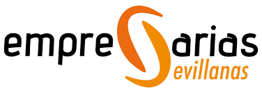
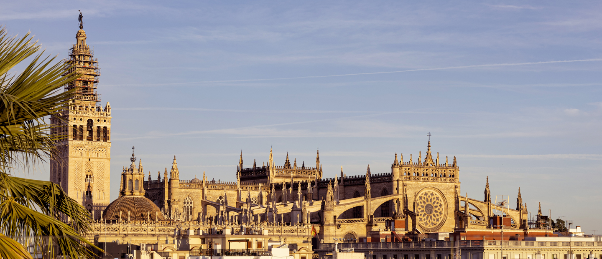

De estar presentes a tener influencia.
Ocupar espacios, aportar propuestas y explicar a las socias qué se defiende y qué se consigue.


Candidatura a la Presidencia de Empresarias Sevillanas · 2026-2030
Un equipo de 5 profesionales liderado por Mariló Caro Cals para consolidar el posicionamiento institucional alcanzado y elevar nuestra asociación a un nivel superior, con mayor visibilidad e influencia.
Tu Protagonismo
Tu talento, tu voz y tu visibilidad son nuestra primera prioridad. Estas son las herramientas que vamos a poner a tu disposición para asegurar que tu empresa ocupe el lugar que merece.
La candidatura
Cinco empresarias, una visión compartida y responsabilidades complementarias para representar, conectar y hacer crecer a las socias.
LAS VOCALÍAS · EL MOTOR DEL CAMBIO
En Empresarias Sevillanas, las vocales se eligen de forma individual y directa en la Asamblea. Salga quien salga elegida el 8 de octubre, en esta Junta trabajaremos con todas sin distinción, dándoles un papel activo real para conectar las comisiones y a cada socia con la mesa directiva.
Listado de candidaturas conocidas hasta la fecha (se actualizará tras la proclamación oficial del 30 de septiembre si concurren nuevas compañeras). El 8 de octubre la Asamblea elegirá libremente las 6 plazas de vocalía.
Nuestra propuesta
La reunión de trabajo deja una propuesta más nítida: influir, comunicar con utilidad, generar oportunidades y reforzar el orgullo de pertenencia.
Ocupar espacios, aportar propuestas y explicar a las socias qué se defiende y qué se consigue.
Hacer visible el talento de las socias y convertir cada comunicación en conocimiento, contexto u oportunidad.
Una red donde encontrar colaboradoras, proveedoras, clientas, mentoras y nuevas posibilidades de negocio.
Reforzar la confianza, el prestigio y el orgullo de ser Empresaria Sevillana con reglas claras y una gestión transparente.
Nuestro propósito
Instituciones
Estar representadas importa. Saber para qué estamos allí, todavía más.
Empresarias Sevillanas lleva años construyendo relaciones con algunas de las principales organizaciones empresariales, instituciones y entidades de Sevilla y Andalucía. Estar presentes en esos espacios permite conocer de primera mano qué está ocurriendo, participar en conversaciones que afectan a nuestras empresas, trasladar necesidades del tejido empresarial femenino y abrir puertas a proyectos, formación, conocimiento y oportunidades.
Nuestra propuesta es dar un paso más: no solo estar. También contar para qué estamos allí y hacer que esa representación vuelva a las socias.
Relación institucional para acercar la realidad de las empresarias a las políticas locales.
Participar en iniciativas vinculadas al emprendimiento, la empresa, la igualdad y el desarrollo económico de Sevilla; conectar con otros agentes del ecosistema empresarial y acercar la realidad de las empresarias a las políticas y programas de la ciudad.
Queremos aprovechar mejor esa presencia para que las socias conozcan las iniciativas, programas y oportunidades que puedan serles útiles.
Desarrollamos conjuntamente iniciativas clave como el Foro Prodetur Mujer y Empresa, con dimensión provincial.
Conexión con empresarias, ayuntamientos y tejido empresarial de los municipios; actividades y programas provinciales; formación; encuentros; conocimiento del territorio y oportunidades para que Empresarias Sevillanas no termine en Sevilla capital.
Sevilla también es su provincia.
Empresarias Sevillanas figura actualmente como asociación sectorial integrada en la Confederación Empresarial de Sevilla.
Participar en el principal ecosistema empresarial sevillano, trasladar necesidades de sectores y empresas, acceder a conocimiento y encuentros empresariales y estar presentes en espacios donde se debaten asuntos que afectan al tejido productivo.
Queremos aprovechar sus comisiones para que más empresarias participen y los problemas de nuestros sectores lleguen donde deben llegar.
Presencia activa e institucional en uno de los principales motores económicos de la ciudad.
Conexión con empresas de distintos sectores, programas de formación y consolidación empresarial, internacionalización, contactos, jornadas y acceso a uno de los principales ecosistemas empresariales de Sevilla.
Contamos con la Cátedra de la Mujer Empresaria, creada conjuntamente por la UPO y Empresarias Sevillanas.
Formación, estudios sobre la realidad empresarial, conexión con universidad y talento joven, investigación aplicada y la posibilidad de convertir las necesidades reales de las empresarias en conocimiento que ayude también a defenderlas mejor.
Conectar las necesidades del tejido productivo sevillano con organizaciones empresariales de ámbito andaluz.
Que las necesidades de las empresarias sevillanas no se queden exclusivamente en el ámbito provincial, sino que puedan conectarse también con organizaciones de nivel andaluz y con otras redes de empresarias.
Después de cada reunión, comisión o encuentro relevante, queremos explicar a las socias qué se ha tratado, qué se ha defendido, qué puede afectar a sus empresas y qué oportunidades pueden derivarse.
Porque estar representada es importante. Sentirse representada también.
Apoyo Institucional
Contamos con el respaldo expreso de organizaciones empresariales clave de Sevilla, que comparten nuestra visión integradora y ejecutiva.
Mandato 2026–2030
Estos son los ocho ejes de trabajo en los que nos vamos a centrar para cambiar nuestra asociación. Conoce las 30 propuestas que hemos preparado para ti.
Este es un programa vivo y diseñado para sumar. Si tienes ideas o propuestas de mejora para la asociación, queremos escucharlas. Escríbenos directamente y construyamos esto juntas.
✉️ Enviar sugerencia al equipoeleccionesmarilo@gmail.com
Asamblea General y Votación
Para lograr el cambio, necesitamos que nos acompañes ese día. No está permitida la delegación del voto, por lo que tu asistencia es fundamental. Y al terminar, compartiremos un vino y un rato de networking para celebrar el inicio de esta nueva etapa.
Jueves, 8 de octubre de 2026
16:30h (1ª convocatoria) | 17:00h (2ª convocatoria)
Sede de CES (Confederación de Empresarios de Sevilla)
Plaza del Triunfo, 1, 41004 Sevilla.
La Plaza del Triunfo, 1 se encuentra en el corazón monumental del Casco Antiguo de Sevilla, una zona de acceso restringido al tráfico rodado.
A pieAviso: No se puede acceder directamente en coche ni aparcar en la plaza.
Como la asociación está en periodo electoral, hemos habilitado un correo directo de la candidatura para resolver cualquier duda sobre el programa.
Nota de neutralidad: Los trámites oficiales (como presentar candidaturas a vocalías) deben hacerse en el correo oficial de secretaría técnica: gerencia@empresariassevillanas.es
Mariló Caro Cals
Una asociación que represente, forme, conecte, visibilice y genere oportunidades para todas.